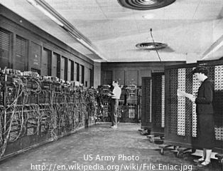
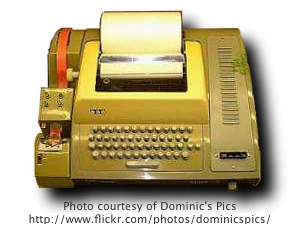
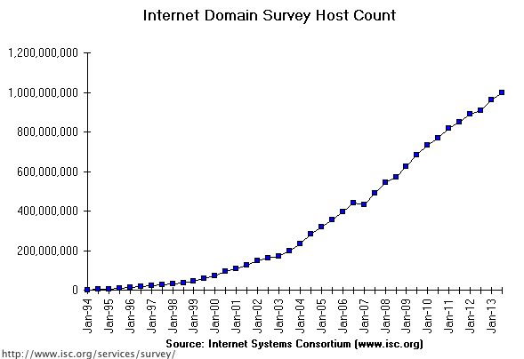
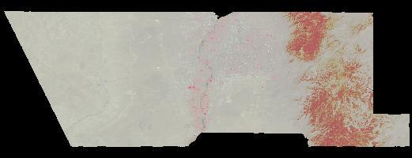

- Geographic Information Systems
- Data Types
- Coordinate Systems
- Services Oriented Architectures
- Historic Context
- Current Model - Network Computing
- Components
- Interoperability Standards
- Vector data represent phenomena that are associated with specific bounded locations, typically represented by:
- Vector data include:
- The geometries that describe the area being referenced, and
- Attributes associated with that area
For example, a census vector data product might include the geometries that define census tracts and attributes associated with each geometry: population, income, etc.
Raster data are frequently used to represent values for phenomena that vary continuously across space (e.g. elevation, concentration of air pollutants, depth to ground water, etc. )
These values are encoded over a regular grid of observation locations with a specified grid spacing - often referred to as the spatial resolution of the dataset (i.e. 10m resolution for a standard USGS Digital Elevation Model product)
Often parts of data collections that are repeated (i.e. remote sensing data products)
- Two geospatial libraries and their related utility programs provide information about and tools for modifying vector and raster data sets
- OGR
vector data access and information
- GDAL
raster data access and information
These libraries are the data access and processing foundation for a growing number of open source and commercial mapping systems
Information and documentation: GDAL Home Page | OGR Home Page
- To convert locations from a 3-dimensional oblate spherical coordinate system (such as is commonly used to represent the surface of the earth) to a 2-dimensional representation in a map, a coordinate transformation must be performed.
- There are a limitless number of potential coordinate transformations possible, and a large number have been named and defined that meet specific cartographic or other requirements
A catalog of numeric codes and associated coordinate transformation parameters is maintained by the International Association of Oil & Gas Producers (OGP) - the successor scientific organization to the European Petroleum Survey Group (EPSG)
These numeric codes are used by many desktop and online mapping systems to document and represent the coordinate systems of available data and services
Links to an online version of the registry and downloadable databases of the registry are available from: http://www.epsg.org/Geodetic.html.
The parameters that define a map projection may be looked up in a number of online locations:
- EPSG registry (helpful if you already know the EPSG code of the projection you are looking for)
http://www.epsg-registry.org/
- GeoTIFF Projection List (helpful if you know the name of one of the broadly used projections - uneven performance of links)
http://www.remotesensing.org/geotiff/proj_list/
- SpatialReference.org (decent search tool, includes non-EPSG as well as EPSG projection information, multiple descriptions of projection parameters)
http://spatialreference.org/
When the projection parameters are in hand, the Proj4 library (http://trac.osgeo.org/proj/) and related utilities (cs2cs and proj) can be used to perform coordinate transformation calculations. cs2cs is my recommended utility for coordinate conversion because of the explicit definition of both source and destination coordinate reference system.
1
2
3
4
5
6
7
8
9
10
11
12
13
14
15
16
17
18
19
| KB:~ kbene$ cs2cs +proj=longlat +ellps=WGS84 +datum=WGS84 +to +proj=utm +zone=13 +ellps=GRS80 +datum=NAD83 +units=m
106.75W 35N
340301.04 3874442.20 0.00
^C
KB:~ kbene$ cs2cs +init="EPSG:4326" +to +init="EPSG:26913"
106.75W 35N
340301.04 3874442.20 0.00
^C
KB:~ kbene$ cs2cs +proj=utm +zone=13 +ellps=GRS80 +datum=NAD83 +units=m +to +proj=longlat +ellps=WGS84 +datum=WGS84
340301.04 3874442.20
106d45'W 35dN 0.000
^C
KB:~ kbene$ cs2cs +init="EPSG:26913" +to +init="EPSG:4326"
340301.04 3874442.20
106d45'W 35dN 0.000
^C
|

- First general purpose electronic computer
- Programmable, but could not store programs



- Mainframe computers to which client terminals connected over a local network
- Computing performed by server, client purely a display device

- Desktop computers capable of running a variety of operating systems and applications
- In some environments can be interconnected to a central local server

- Predecessor to the Internet - ARPANET (1969). Interconnection between UCLA and SRI (Menlo Park)
- Adoption of TCP/IP as next generation protocol for ARPANET (1983)
- NSF commissions construction of NSFNET, also based upon TCP/IP (1983)
- NSFNET opened to commercial connections (1988). Led to interconnection of multiple, previously separate networks into an “Internet”
- Growth of internet users has expanded rapidly over the past decade
The current networking computing model consists of Components Interacting with Each Other
What are components?
What does it mean to interact?

- Services Oriented Architecture (SOA) for Geospatial Data and Processing
- Data, Processing & Client Tiers
- Open Geospatial Consortium Interoperability Standards
- Geospatial Metadata Standards
- Internet Standards
- Web: HTML, CSS, JavaScript, XML
- SOAP - Simple Object Access Protocol
- REST - Representation State Transformation
Database systems
- Optimized for storing massive quantities of tabular data
- May be spatially enabled to support the storage of geometries (points, lines, polygons) in addition to related attribute data
- Standard language (Structured Query Language [SQL]) for interacting with many databases
- Broad support for accessing the contents of databases from many other applications and programming languages, for example:
- Spreadsheets
- Statistical Software
- Geographic Information Systems (GIS)
File-based data
- Often stored on the file system
- Sometimes difficult represent data within a database structure (i.e. binary data)
- May be in a wide variety of formats
- XML
- ASCII Text (e.g. CSV, tab-delimited)
- Binary files
- Excel Spreadsheets
- Word Processing Documents
- Geospatial data (e.g. imagery)
- Remotely Accessible Data
- Some data may be provided through reference to an external network resource (i.e. a web address, or other identifier) or service
- Any system that accesses the services provided by the system may be considered a “client”
- That system may be manually operated by a human user, or triggered automatically by software
- Human operated clients include
- Web-based applications
- Desktop applications such as Geographic Information Systems and Statistical Analysis tools
- Machine clients include
- Data processing services that translate requests to them into requests for other system services
- Regularly scheduled requests that are automatically triggered by external computer systems.
- Two Classes of Standards Considered Here
- Geospatial Product Access Standards
- Geospatial Data and Representation Standards
- Product Access Standards
- Web Map Services (WMS)
- Web Feature Services (WFS)
- Web Coverage Services (WCS)
- Data and Representation Standards
- Geography Markup Language (GML)
- KML (formerly known as Keyhole Markup Language)

http://gstore.unm.edu/apps/rgis/datasets/b030ab7b-86e3-4c30-91c0-f427303d5c77/services/ogc/wms?
VERSION=1.1.1&&
SERVICE=WMS&
REQUEST=GetMap&
SRS=EPSG:4326&
FORMAT=image/jpeg&
STYLES=&
LAYERS=bernalillo_tm2011&
TRANSPARENT=TRUE&
WIDTH=521&
HEIGHT=200&
bbox=-107.207,34.8404,-106.143,35.2487

- HTTP GET (required), HTTP POST (optional)
- Requests:
GetCapabilitiesGetMapGetFeatureInfo
- Returns
- Mapped data
- XML Capabilities Document, Feature Attributes
- Includes support for time-based requests
- Either HTTP GET or POST required
- Requests
GetCapabilitiesDescribeFeatureTypeGetFeature/GetFeatureWithLockGetGmlObjectLockFeatureTransaction
- Returns
- XML (GML)
- Capabilities
- Feature Data
- Either HTTP GET or POST required
- Requests
GetCapabilitiesDescribeCoverageGetCoverage
- Returns
- Geospatial data for coverage
- XML Capabilities
- Includes support for time-based requests
- GML is an XML grammar for representing geospatial features and their associated attributes
- In its generic form it can encode points, lines, and polygons and their associated attributes
- As an XML schema GML was designed to be extensible by communities of practice for consistent encoding of geographic data more richly than allowed by the generic default model
- GML documents representing large complex geometries can be quite large - therefore slow to transfer over the Internet
- An XML specification that supports the encoding of representation and embedding of geospatial data for use in geospatial viewers
- Began as the underlying representation language of Google Earth (originally developed by Keyhole for their virtual Earth viewer)
- Adopted as an OGC standard in 2008
- Supports data linkage through
- Embedding
- Reference through external URLs - with WMS specifically supported through parameterization
- Includes support for the representation of time in relation to data objects
- WMS
- 1.3.0 - 284 implementations
- 1.1.1 - 474
- 1.1 - 238
- 1.0 - 274
- WFS
- 2.0 - 36
- 2.0 transactional - 3
- 1.1.0 - 228
- 1.1.0 transactional - 52
- 1.0.0 - 304
- 1.0.0 transactional - 113
- WCS
- 2.0 - 7
- 1.1.2 - 19
- 1.1.1 - 37
- 1.1.0 - 30
- 1.0.0 Corregendum - 190
Implementation information based upon OGC Implementation Statistics - Accessed 2/2014
- KML
- 2.2.0 - 74
- 2.2 Reference (Best Practice) - 11
- 2.1 Reference (Best Practice) - 64
- GML
- 3.3 - 5
- 3.2.1 - 110
- 3.1.1 - 161
- 3.0 - 127
- 2.1.2 - 142
- 2.1.1 - 100
- 2.0 - 82
- 1.0 - 20
Implementation information based upon OGC Implementation Statistics - Accessed 2/2014
The OGC web service specifications support key geospatial data access requirements
- WMS
visualization of geospatial data through simple web requests
- WFS
delivery of geospatial data (typically points, lines, and polygons) in a format that is usable in GIS and other applications
- WCS
delivery of geospatial data (typically, but not limited to, raster data) usable in other applications
The OGC data and representation standards support data exchange and higher level representation
- GML
XML schema for the representation of features and associated attributes. It may be extended for use by specific communities of users (i.e. ecological data models)
- KML
XML schema that supports the combination of embedded data and external data into a complete representation model that may be used by client applications to present the data through a user interface (e.g. Google Earth, WorldWind)